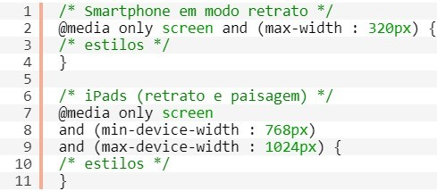

DESIGN RESPONSIVO
COMO SURGIU?
Em 2010, pensando em melhorar a sua experiência de navegação, Ethan Marcotte criou o artigo Responsive Web Design para o blog A List Apart. Ele apresenta o arquiteto inglês Christopher Wren, que disse certa vez que arquitetura é uma arte que “objetiva a eternidade”. Todo arquiteto que se preze quer construir um prédio que seja admirado (e habitado) por séculos… Infelizmente o Design Digital não tem a permanência da arquitetura. Na verdade, o que é projetado para internet hoje, já estará desatualizado daqui a duas semanas!

PORQUE USAR?
Nos tempos atuais, além dos desktops e notebooks, é possível acessar a internet através de smartphones, tablets, televisores e já existem até mesmo geladeiras que possuem internet para algumas finalidades, como buscar receitas ou ler as últimas notícias, por exemplo.
De acordo com a pesquisa realizada pela WMcCann, 41% dos entrevistados acessam a internet pelo celular e, dentre estes, 47% utilizam banda larga móvel (3G). Além disso, 44,4% das pessoas que ainda possuíam o celular convencional, disseram que pretendiam trocar de aparelho em 6 meses ou menos.

COMO FAZER?
O Design Responsivo usa Media Queries, que em uma tradução livre é consulta de mídia. São expressões que direcionam o visitante do seu site para uma folha de estilos diferente de acordo com o dispositivo que ele estiver utilizando.
